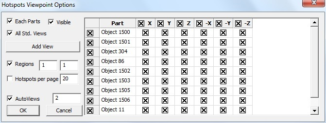
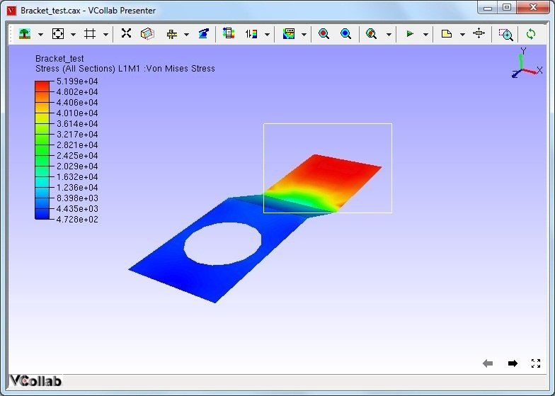

Generate CAE Report
The Hotspot finder tool helps to find the hotspots in a model. A hotspot can be a node, an element or an area in the computational domain with extreme values (maximum or minimum) of a result. Local minima, local maxima or nodes/elements/areas with high gradients can also be considered as hotspots in certain situations. As the definition of hotspots can be situational, various mechanisms to identify hotspots are provided in VCollab Pro. Users can choose the right mechanism based on their understanding of the problem to identify the hotspots.
Hot Spot Generation
VCollab uses the concept of viewpoint to store a display state and retrieve it and show it to the user. A view point is basically a display state. A sequence of view points is termed as a view path in VCollab. The automatic hotspot generator in VCollab generates the hot spots as a view path. Each viewpoint in this view path can display annotated hot spots over a zone of the mesh or over the whole geometry. The procedure to generate hotspots automatically is described in the following steps.
Load a model, select the desired result (determines the hot spots) in the CAE results
Click CAE | CAE Settings in the context menu.
Select Hotspot Finder tab to open up Hotspot Settings dialog.
Select Hotspots in the Find list box.
The various options and fields that are available under Hotspot finder are explained below.
- Find: Users can choose from any one option from the drop down list
- Local Extrema : Under this option, VCollab Pro identifies the local maximum or minimum in a node/element within the specified zone radius .
- Global Extrema: Under this option, VCollab Pro identifies the nodes or elements with global maximum or minimum values as the hotspots.
To know more about Local and Global Extrema, click here.
Hotspot Range (Min & Max): When a range is specified, VCollab Pro filters the nodes whose result values lie outside this range. They are not considered hot spots. Hot spots are searched among nodes whose values satisfy the range limits.
Hotspot Count (Top and Bottom): This option specifies the number of hotspots that need to be generated. Hotspots top and bottom labels are differentiated by label border colors, which are red and blue respectively. Users can change the default colors if needed.
All Top: If the top value is 100 (as an example) and there are multiple IDs with the same value, then hotspot finder considers and displays only one of these IDs if All Top is unchecked. If this option is checked, hotspot finder displays all IDs with the same top values.
All Bottom: This option is similar to the All Top option, except that it considers bottom values.
Mark MinMax: This option highlights the labels of maximum of top labels and minimum of bottom labels. Maximum and Minimum labels are highlighted with text colors of Red and Blue respectively.
Zone Radius: The Zone radius option helps to avoid locating hot spots next to each other. Once a hotspot is found, VCollab skips all the nodes within the specified radius while searching for the next hotspot.
Visible Surface: Displays the visible labels in the current view.
Probe Label Settings: Allows users to select probe type and template and other result attributes.

Probe Type:
- CurrentResult - Derived : current scalar value
- CurrentResult - Full : Displays all components for vector and tensor results.
- All Results - Table : Displays user selected scalar result values.
- All Instances - Table : Displays all instance values in a table.
- All Instances - XYPlot :Displays all instance values as a XYPlot graph.
Template type: This option displays values in a predefined template (format). Header options are meaningful for template 1 when at least one dataset is merged with an existing one.
Model: Selects the model for which results are listed for selection.
All Results: Displays a list of all available results for the selected model. To select a result (for probe labels), click on it and then press >> button. The selected result will get added to the Select Results list.
Selected Results: Displays a list of all the selected results. To deselect a result, click on it and then press << button. The result will be removed from this list and appear under the All Results list. To rearrange the results order in the labels, drag the result and drop where you want to place.
Row Header: To display either dataset name or result/instance name in the first column of the label, check the row header box. Each row header shows the result/instance that corresponds to the CAE result data
Column Header: To display either dataset name or result/instance name in the top of the labels, check the column header box. Each column denotes CAE result data and row denotes the corresponding result/instance name.

Part Header: Adds annotated part name into the label.
Header legend: Displays acronym of the results as a separate label.
Abbreviation Legend: Displays the legend or abbreviation and its acronym in a table separately. It displays a table for short letters for results used in the labels. It can be moved like other labels.
ID : Displays nodal or element ID in the label.
Rank: Displays rank number based on the hotspot value and number of hotspots found.
Rank Ascending Order: Specifies ranking process to be ascending or descending.
Label Settings: Allows users to format the text and background of the label.
Result Options: Allows users to select and highlight labels based on the result values.
Apply or OK: Apply the modifications.
Compare Options : This option is visible only when at least one dataset is merged with existing one. It is used to compare results of merged models. Users can select the models to be compared with the base model (current model). By default it generates hotspots/min max labels for the current model.
Comparison Field: The following methods are available to users to compare results.
*Radius refers to the default radius and not the user defined Zone radius
Position : Nearest - Compare one hotspot node with a node from another model based on position
- Get nearest node from the other model with distance < *Radius
- Select this nearest node for comparison.
Position : Min/Max - Compare one hotspot node with a node from another model based on position
- Get all nodes in the other model with distance < *Radius
- From this set of nodes select one node for comparison
- For top hotspot select the node with Max value
- For bottom hotspot select the node with Min value
ID: Compare the hot spot node with a node from the other model having the same id.
ID : Distance - Compare the hot spot node with a node from the other model having the same id
- AND distance < *Radius
Hotspot: Min/Max- Compare the hotspot node with a hot spot node from the other model by:
- Get all hotspot nodes in the other model with distance < *Radius.
- From this set of hotspots select one hot spot for comparison
- For Top hot spot select the hotspot with Max value
- For Bottom hotspot select the hotspot with Min value.
Hotspot: Nearest- Compare the hotspot node with a hotspot node from another model.
- Get all hotspot nodes in the other model with distance < *Radius.
b. From this set of hotspots select the nearest hotspot (of same type) for comparison.
Hotspot: Min/Max UseRange- Compare the hotspot node with a hot spot node from another model
- Get all hotspot nodes in another model with distance < Zone radius (user defined).
- From this set of hotspots select one hot spot for comparison.
- For Top hotspot select top hotspot with Max value.
- For Bottom hotspot select bottom hot spot with Min value.
Hotspot: Nearest UseRange- Compare the hotspot node with another hotspot node from the other model
- Get all hotspot nodes in another model with distance < Zone radius (user defined).
- From this set of hotspots select nearest hotspot (of same type) for comparison
Compare With
- Same Part - Compare using the comparison options specified above in the same part of other model.
- Visible Parts - Compare using the compare options specified above in all visible parts of the other model.
- All Parts - Compare using the compare options specified above in all parts.
Within Distance - Allows users to specify the distance value and hotspots are computed within this range.
Hotspots In All Models: Finds hotspots for each model. Then it appends results from merged models as rows or columns based on the template selected.
Show All Connections: Shows all the connecting lines between the label and its attached positions.
Mask : This option in the Hotspot finder panel, allows users to mask a set of nodes and elements from the process. Users can mask the nodesets from the hotspot finding process using *Node Set manager*.
Note: Masking is not supported for Elemental Result.
Inverse ON will exclude the node sets selected, whereas Inverse OFF finds hotspots only in the node sets selected.

Add View Points: When enabled, this option generates viewpoints according to viewpoint options specified. Viewpoints Options button is enabled only when this option is checked.
Export: This option helps users to export the viewpoints into either VPT file or Microsoft PPT file. While adding the view path, users will be prompted for a file name and file type.
Viewpoints Options: This option helps users to select either part wise viewpoints or multi view points for a single scene.

The various fields that are seen in the Viewpoint Options panel are explained below
Each Parts: Enabling this option creates a viewpoint for every part. If the top hotspot count is specified as ten, and if the model consists of 5 parts, then the generated view path consists of 5 viewpoints (one per each part) with each viewpoint consisting of ten hot spots in the corresponding part. There will not be any change in view and orientations. In every viewpoint, one part is visible and others are hidden.
Visible: When enabled, this option filters the parts based on its visibility and lists the parts in the list.
All Std. Views: This option will include 6 standard view points (X, Y, Z,-X,-Y and -Z) for each part or current scene based on Each Part option. The viewpoints can be filtered by checking or unchecking the corresponding boxes. options. Users can check or uncheck the entire column or row as well in one shot.
Add View: Add view option adds current camera view or user’s view as an option with standard views in the GUI. Users can check or uncheck if necessary. To update current view, click on the icon. It will set the current camera position as the viewpoint.
Regions: The model area can be split into a number of regions and each region that is displayed focuses on that region’s hotspots. (2,4) means to split the model area into 2 regions horizontally and 4 regions vertically, so the total regions are 2x4=8.

Hotspots per page: Users can specify the number of hotspots per page in the viewpoints. If there are 45 hotspots in the model and 20 are the Hotspots per page specified, then 3 viewpoints will be generated. First and second viewpoints will have 20 hotspots in each and the remaining 5 hotspots will be shown in the third viewpoint.
Note: By default the number of hotspots per page is 20 (max allowed). Users can change this as per requirement.
Auto Views : When selected, this option helps to orient the viewpoint so that the user can view all the hotspots clearly.
The number of auto views specifies how many auto viewpoints should be generated to make all the hotspots visible to the user.
Steps to edit the generated viewpoint manually
Users can edit the view points generated by using an automatic hotspot generator and add hotspots manually as follows.
- Create a view path by using automatic hotspot generation as explained in the previous section.
- Open the hotspot settings and check Previous Labels
- Select a view point generated by using automatic hotspot finder, for example viewpoint “Object 1”
- Select the menu item Label -> Delete Labels/Notes in the context menu to remove the unwanted annotations and click to move the annotations
- Uncheck the Label -> Delete Labels/Notes when completed
- Click the hotspot finder tool.
- Left click and drag to select an area for creating hotspots.
- Right click in the ViewPoints tab to open the context menu.
- Right click on the viewpoint to be edited.
- Then select the Update viewpoint for updating
Min / Max Hotspot Generation
Instead of generating hotspots automatically, users can also locate the hotspots manually. The manual hotspot generation currently supports only location of nodes with extreme values (minimum/maximum). Local extremes are not supported at present.
Steps to locate hotspots manually
- Click the hotspot finder icon in the toolbar. The mouse mode is now changed to hotspot finder mode.
- Click and drag on the graphics window to select a region as shown in the following screen capture.

When a region is selected, VCollab locates the nodes with minimum and maximum values in the selected region and displays as shown in the following figure.
3. The above image shows two hot spots (node 25 and node 96) that are identified by VCollab. The maximum deformation (displacement) in the selected rectangular window occurs at node 25 (magnitude of 1.866) and the minimum occurs at node 96 (magnitude of 0.016).
4. The user can select another region and display the nodes with minimum and maximum values for the selected region again. The number of hot spots along with other settings can be changed in the Hot spot finder settings dialog. This dialog can be opened using the following steps.
- Invoke CAE settings dialog from the context menu
- Click on the Hotspot finder tab.

All default settings except All Top and Bottom, are the same as in the Hotspots option.
The following list explains different settings and their significance.
The number of hot spots to be displayed can be controlled by changing the values in top and bottom text boxes. In the following figure, two top and three bottom hot spots are specified.

Selecting an area on the screen with the left mouse down with these settings, results in the display of five hot spots (two nodes with highest values and three nodes with the lowest values). Users can uncheck the top/bottom or change its count to zero to display only the nodes with the lowest/highest values respectively.
The Zone radius option that is provided in the hot spot settings allows the user to avoid locating hot spots next to each other.
Once a node with maximum/minimum is found, VCollab skips all the nodes within the specified radius of that node during its search for the next maximum/minimum. The following two images show the identified hotspots without and with the use of zone radius option.
Note: When the mouse control is in hotspot mode, users cannot zoom, pan or rotate the image. To be able to do so, while continuing in hotspot mode, users can turn on the Navigator by either turning on the Navigator in the product tree or by clicking the menu item *T*ools -> Navigator. The navigator displays additional entities on the graphical window which facilitate zoom, rotate or pan the scene.

Steps to Export Viewpoints generated by the user
- Select the desired view path in the viewpoints tab from the drop down list.
- Right click to open the context menu.
- Click on the Export viewpoints option.
- The Save file dialog opens. Enter the filename and change the Save as type: to MS-PowerPoint Presentation Files (*.ppt)
- VCollab prompts the user to use any predefined Microsoft PowerPoint template. Select *Yes* to use a predefined template.
- Wait till VCollab exports all the viewpoints and creates a PowerPoint file with viewpoints as slides.